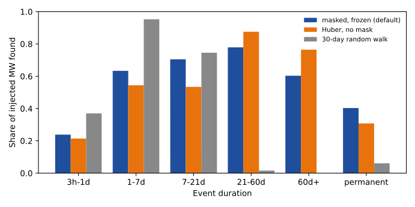
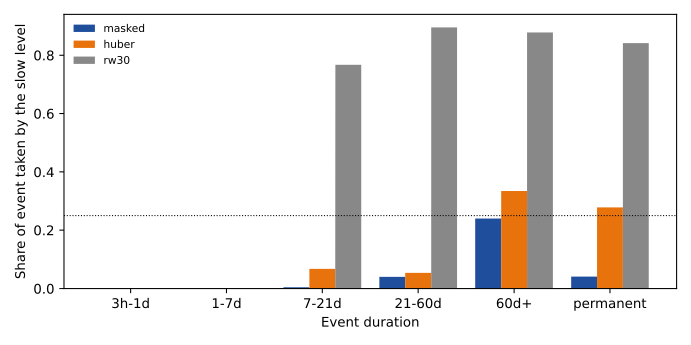
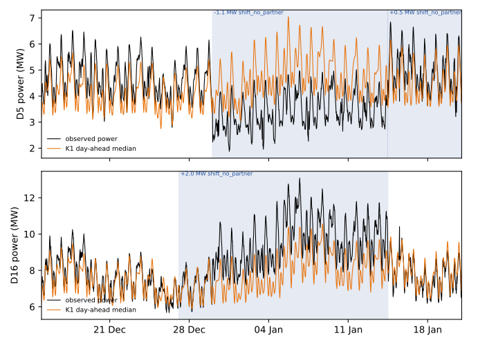

Can a penalised segmentation of the Primaries' residuals build a table of load-shift events with partners, start times, and end times?
At 15 Primary substations, penalised segmentation finds most injected load shifts but did not pair a shift with the neighbour that received the power. A Primary substation is the substation that steps electricity down to the local distribution network, and the project forecasts the demand at each one. Operators sometimes switch a circuit from one Primary to a neighbour, which moves demand between the two. We asked whether the unexplained demand at 15 Primaries, read together, can produce a table of these load shifts: when each starts and ends, which Primary received the power, and how many megawatts moved. The unexplained demand (the residual) is the observed cleaned power minus a demand forecast that uses no lagged power.
We added synthetic load shifts to the residual and decoded the real record from 2024-01-01 to 2026-06-30. The table found 0.64 of the injected megawatts (95% interval 0.58 to 0.70), against a predicted 0.70. It paired the two ends of only 0.18 of injected transfers correctly (0.09 to 0.31). On the real record it matched 8 of the 77 logged shifts that last more than a day under the strict timing rule, where the alarms of the earlier detector LR_b20 matched 19 (the table has 246 events, LR_b20 has 78 alarms). The verdict is not supported.
The pre-registered stop rule fires, but only at its boundary. A shuffled neighbour graph gave 2 edge events (5th to 95th percentile 0 to 4) where the real graph gave 4, which is exactly half. Four real edge events are too few to give that placebo much power. The injected pairing recall of 0.18 is the stronger evidence.
Terms used below
- Primary-year: one Primary observed for one year. Edge-year: one neighbour link between two Primaries observed for one year.
- Noise unit: a Primary's typical difference between successive 6-hour block means, in megawatts (0.16 to 1.02 MW across the 15 Primaries, median 0.22 MW). "4 noise units" is 4 times that.
- World: one copy of the residual panel with synthetic events added. There are 6 worlds in the scored years.
- Edge event: a pair of opposite-sign shifts at two neighbouring Primaries that start and end together. A shift without a partner has no such pair.
- LR_b20, RO-NC: the label-trained and label-free detectors of experiment 254 and experiment 130. K1: the day-ahead median forecast of the leaderboard. D3, D5, D16, D22 and the like: anonymised Primary names. P1 to P6: the predictions in the front matter.
Figures


The second figure shows only the bands that the sparse long-event worlds contain, so it has no bars below 7 days.

Results
- Recall of injected events (default arm; 6 worlds; 227 events of 4 noise units or more that last 1 day or more). MW-weighted found 0.64 (0.58 to 0.70); unweighted 0.56. Edge transfers (109 donor or recipient ends, from 76 transfers): paired correctly 0.18 MW-weighted (0.09 to 0.31); 0.17 unweighted. This is a share of ends, and only 38% of the 76 transfers have every end found. P1 asked for 0.70 on edge transfers; 0.18 fails. The all-event figure of 0.64 is below 0.70, but the 95% interval reaches 0.70. The intervals resample whole worlds, 2000 draws, so with 6 worlds they are probably too narrow.
- By duration band (found, MW-weighted, events of 4 noise units or more). 3 hours to 1 day 0.24; 1 to 7 days 0.63; 7 to 21 days 0.70; 21 to 60 days 0.78; over 60 days 0.60; permanent 0.40. Pulses shorter than the 6-hour block were never found.
- Timing (P2, over the same 227 events, a miss counts as a failure). The start is within 2 hours for 0.53 of events, against 0.70 predicted. The end is within 6 hours for 0.48, against 0.50 predicted.
- Slow-level arms (sparse worlds; median share of an event taken by the slow level; events per cell 4 to 14, so indicative). Masked and frozen: 7 to 21 days 0.00 (n=4), 21 to 60 days 0.04 (7), over 60 days 0.24 (14), permanent 0.04 (11). Huber with no mask: 0.07, 0.05, 0.33, 0.28. A 30-day random walk: 0.77, 0.90, 0.88, 0.84. The absorption targets of P5 hold (0.10 or less for the masked arm, 0.30 or more for the random walk, in the 21-to-60-day band), as does recall in that band (0.78 against 0.6 or more).
- Temporary against permanent (P5). Of the 147 found events that start 180 days or more before the record end, 145 were temporary and classed temporary. The other 2 were permanent and were also classed temporary, so no permanent event was ever classed permanent. The 98.6% accuracy therefore says nothing about the permanent class.
- False events from solar growth and seasonal bias, per injected Primary-year. Solar growth 0.93 (masked), 0.87 (Huber), 0.27 (random walk); seasonal bias 2.2, 2.3, and 0.04. P5 asked for 0.5 or fewer, and the masked arm fails both. This is the only part of P5 that fails.
- Hard negatives. None of the injected routine steps (389), ramps (221), pulses (221), solo shifts (277), or placebo pairs (98) was classed as an edge transfer. Of the routine steps, 2 were classed as routine and 73 were called shifts without a partner.
- Where injected edge transfers went (231 events). 148 decoded as no event at all, 51 as a shift without a partner, 31 as an edge event. Because the injected shares (0.5 to 1.1) lie inside the pairing window (0.3 to 1.5), the window does not explain the failure. A re-decode of the 6 worlds with a share window of 0.1 to 3 and conservation limit 10 pairs 0.22, and with wider start and end windows 0.25, so relaxing the rule recovers at most 7 points. Half of the ends are not found at all. All 31 ends called an edge transfer had the right partner, so the pairing has high precision and low recall.
- Shape of the injected events. Constant-megawatt events: found 0.66, paired 0.14. Events proportional to the donor's own power: found 0.56, paired 0.24. Short-heavy and long-heavy mixtures found 0.62 and 0.43. The stress arm (shares 0.2 to 1.8, starts up to 12 hours apart) found 0.65 and paired 0.07.
- Real record (2024-01-01 to 2026-06-30, default arm). 246 events, 6.6 per Primary-year: 211 shifts without a partner, 27 ramps, 4 edge transfers, and 4 routine steps. D8 has 9.6 events per Primary-year against a median of 6.8, inside the factor of 2 the plan allows. There are 25 edges between the 15 Primaries. A 100-draw degree-preserving rewiring of the graph gave a median of 2 edge events (5th to 95th percentile 0 to 4), against 4 for the real graph. P3 (a third or fewer) fails, and the stop rule (half or more) fires at its boundary: 2 of 4 is exactly half, and 4 lies inside the placebo's 0-to-4 range. The 4 real edge events are 2 pairs (D10 with D21, D12 with D14), neither of them the verified D3/D22 or D5/D16 pair. The rewired counts are all even, and 21 of 100 draws reach 4 or more (about 0.2 on a one-sided test), so the placebo is weak evidence.
- Logged shifts (P4). Of 77 logged shifts of more than 1 day that start on or after 2024-01-01, LR_b20's 78 alarms in those years (2.1 per Primary-year) match 19 at the strict rule and 24 at the loose rule. All 246 events of this table (6.6 per Primary-year) match 8 and 17. No confidence threshold gives exactly LR_b20's alarm count: the table at confidence 0.99 or more has 45 events (1.2 per Primary-year, fewer alarms than LR_b20) and matches 5 and 8. P4 asked for 24 of 35 at LR_b20's rate and fails. The 77 and the 35 are different sets of logged shifts: the 35 span the whole record and the 77 are the scored years.
- Event-free rows. 27.6 of the 37.5 Primary-years lie more than 14 days from every labelled or verified event. The masked arm decodes 5.4 events per Primary-year there, the Huber arm 6.2, and the random-walk arm 2.0. These are upper bounds on false events, because NGED's logs miss events.
- Verified pair (P6). The verified onsets and ends come from experiment 580: D5 from 2025-12-29 01:00 to 2026-01-13 11:30, and D16 from 2025-12-29 16:00 to 2026-01-13 11:30. The masked arm decodes D5 from 2025-12-30 01:00 to 2026-01-14 11:30 at -1.08 MW, which is 24 hours late at both ends and below P6's floor of 1.2 MW. It decodes D16 from 2025-12-27 02:00 (2.6 days early) to 2026-01-14 12:00 (24.5 hours late) at +2.05 MW. The two events were not paired, because the recipient-to-donor ratio is 1.9 and the pairing window ends at 1.5. The slow level moved by 0.4 points of capacity or less across both, which meets that part of P6. P6 fails on timing, amplitude, and pairing.
- The October 2024 transfer between D3 and D22 (a seen case, because it set the generator). The masked and Huber arms find events at both Primaries, whose ends differ by about 19 days, and only the Huber arm pairs them. The random-walk arm finds only a 2-day fragment of D3 (18 to 20 November 2024). The December 2025 episode at D10 and the unpaired step at D12 are not shown.
-
Four scenarios (normalised MAE of the median forecast, in per cent of effective capacity; 15 Primaries; scored years). The forecast is the lag-free demand model of experiment 130, not K1. "After the table" subtracts the slow level and the decoded events from the residual, in hindsight. Each half-hour belongs to a scenario according to the decoded events.
Scenario Half-hours Before the table After the table All rows 631,470 6.31 5.29 Quiet rows (not inside an event, and not in the 7 days after one) 374,405 5.28 5.01 Inside events 185,873 8.62 5.87 The 7 days after an event ends 71,192 5.69 5.30 The inside-event row falls by construction, because the events are decoded from the same residual. The figure above draws the D5 and D16 case, 14 days before the start to 7 days after the end, with the K1 day-ahead median as the baseline. The other three scenarios are scored but not drawn, because the brief's required example (a verified event) is the only case with labelled ends.
Checks
- Median minus mean forecast per site, tail calibration, and the curtailment-cost score: not applicable, because the table produces no forecast.
- Mean-forecast error beside each contrast: the normalised MAE in the four scenarios above is the only forecast-error measure.
- Audit triggers. Trigger 1 (a control or known-answer test failed) fired: D5 and D16 were not paired, and the rewired-graph placebo separates from the real graph by 2 events. Trigger 2 (a result contradicts its own prediction) fired: P1 to P4 and P6 fail, and P5 fails in its false-event part. A fresh Sonnet auditor re-derived the headline numbers from the stored outputs; see the end of "Reviews and triage" for what it found.
- Not run: the unconfirmed edge events per edge-year (the second half of P1), the discriminator between injected and real windows, the recall-by-size table, the cross-generator check, the RO-NC count in the second part of the stop rule, the baselines other than LR_b20 (RO-NC, the 24-hour residual detector, the label-free pipeline of experiment 327, the edge-flow fit of experiment 131, and the pair alarm), the wobble check, the rate check at 13 or more Primaries, an ERA5-driven residual for D5, the grouping of two solo shifts into an unseen donor, MW-against-MVA handling of injected amplitudes, the pooled seasonal shape for D18 (it has a one-harmonic seasonal fit), and a staged-return arm apart from the 10% of injected events that carry one.
Reviews and triage
- Plan review (Sonnet). 12 findings, 5 of them high severity; all accepted and written into the plan before any code ran.
- Code review (Sonnet). 15 findings, 2 of them high severity: censored events could never match
in the tuning worlds, and permanent events tapered to zero at the record end. Both were fixed. The
placebo, the
founddefinition, and the false-event bookkeeping were also fixed or restated. Not fixed: the missing decoder states (see Method) and the weak binding of the conservation cost, which the share window decides in practice. - Write-up numbers review (Sonnet). All figures in Results matched the printed reports except the items below. Accepted: the D3 and D22 statement, the permanent-event count, the alarm-rate wording, the D16 offset, the interval method, the Method statements that described unrun components, the unsourced numbers, the missing items in "Not run", the stop-rule and P1 wording, and the per-part pass or fail for P5 and P6.
- Write-up prose review (Sonnet). Accepted: the cold-read opening and terms, the pronoun and number fixes, the bolded leads, the table indentation, the three required Checks bullets, the trigger-by-trigger audit statement, the present-tense Method, the Files list, and the citations. Rejected: drawing the three other scenario examples (the page says why they are not drawn), and turning every Method bullet into a paragraph (the bullets are short enough to skim).
- Tuning. Penalties were chosen on 2022 and 2023 injected worlds only (on cost 6, stay cost 0.05), as the highest injected recall with at most 6 decoded events per Primary-year on the real residual of those years. The chosen setting has 5.90 decoded events per Primary-year there, against 6.57 in the scored years. Three settings tie at recall 0.6314 (on cost 6 with stay cost 0.05 or 0.1, and on cost 8 with stay cost 0.1); the choice of stay cost 0.05 is a tie-break. The plan's event-free stratum was not used, because defining it needs labels.
- Audit (Sonnet, fresh). It re-derived the found share (0.639, interval 0.575 to 0.703), the
pairing figure (0.179), and the logged-shift counts (8 and 17 against 19 and 24) from the stored
outputs, and found no leakage of 2024-onward years or labels into tuning, and no double matching
of a truth event. Accepted: the per-end wording of the pairing figure, the weak-placebo reading,
and the relaxed-rule result above. D8 and D5 account for 42 of the 77 logged shifts. The scripts
e00653_inject.pyande00653_run.pywere edited about a minute after the injected score file was written; the audit's re-run reproduced the stored default-spec results exactly but did not re-run the other generator specs. - Lab shortcuts. Injected events are added to the stored residual and not to the power before the demand model is refitted, so recall is a ceiling for events as large as real events. The residual's demand model trained on all rows, so earlier real events leak into its baseline. The grid starts on 2022-01-01, not 2019, and has 15 Primaries.
- Step 0. The step widths measured on half-hourly power were 0 to 42 half-hours and are not trustworthy at this noise level. A proportional shape beat a constant shape by 4% to 10% of residual variance at D3 and D22 and by 1% to 6% at D5 and D16, which is inconclusive, so both shapes were injected. The generator kept its default edge width of 0 to 4 half-hours.
What the next experiment should answer
The next experiment should test an event table per Primary that leaves out partners. The segmentation found most injected events of 7 days or more; the weak parts are events under a day and the pairing. A longer record with more Primaries, or a residual that already removes more of the daily shape, would be the changes to try before any neural network.
Method
Architecture and algorithm.
- Input. The residual is the observed cleaned power minus the forecast of the lag-free convex
demand model of experiment 130, as
stored by experiment 327 (arm C,
trained on every half-hour that has a reading). Weather is ERA5 and CAMS estimates of past
weather, so the table is a hindsight product and cannot be made live. Half-hours that the
substation_zerorule flags are missing. D15 and D18 lose every row before 2025-03-01. The median residual across all Primaries (the common mode) is removed before segmentation. - Noise unit. For each Primary, one noise unit is the robust spread of the difference between successive 6-hour block means, computed once on the uninjected residual and frozen.
- Slow level (default arm). A seasonal level per Primary, following the slow-level addendum of 9 November 2026 to the design answer: 3 day-of-year harmonics shared by all years plus a linear spline with knots every 365 days, fitted with a Huber (1964) loss. The fit gives zero weight to any window whose 3-day mean residual exceeds 1.5 noise units, widened by 2 days on each side. It refits three times and then freezes, so the segmentation cannot change it. D18 uses a one-harmonic fit. A trend in unmetered solar panels is left out of the default arm, and the page counts the false events that solar growth causes instead.
- Slow level (comparison arms). Arm S0 is a 30-day random walk with a penalty on its curvature. Arm S1 is the same seasonal fit with a Huber loss and no mask.
- Segmentation. Each Primary's residual, with the slow level removed, is cut into 6-hour block means. An exact dynamic programme decodes 25 states per block: no shift, and 12 amplitudes log-spaced from 1 to 20 noise units in each sign. The emission is a Student-t density with 4 degrees of freedom. The decoder is a Viterbi (1967) pass, and a forward-backward pass (Rabiner, 1989) gives the posterior that a block is shifted. Staying shifted costs a fixed amount per block and switching on costs an onset price. A final pass refines each start and end to the half-hour by maximising the step statistic within 12 hours of the block boundary.
- Classing an event. Ramp, routine, and permanent classes are assigned after decoding, not as decoder states. An event is a ramp when at least 0.25 of its change happens gradually over 4 hours or more. An unpaired event of 3 days or less is a routine step when 4 or more such events lie within 30 days of its start at the same Primary. A shift with no return within 180 days is permanent, and one whose end lies beyond the record is open.
- Pairing. Opposite-sign events at neighbouring Primaries (the graph of experiment 383) are paired when their starts are within 6 hours and their ends within the larger of 12 hours and 25% of the duration. The recipient's share of the donor's step must be 0.3 to 1.5, there are at most 3 recipients, and a loose conservation cost (limit 2.5, after experiment 459) rejects poor sums. A paired event is an edge transfer and an unpaired one is a shift without a partner.
- Output. One row per event: start and end with intervals, Primaries, direction, megawatts per Primary, class, duration band, and posterior confidence.
Training regime.
- Fitting. There is nothing to train. Penalties and thresholds are tuned on the 2022 and 2023 injected worlds (see Tuning above), and the 2024 to 2026 years are scored once. NGED's labels enter no penalty, threshold, or mask.
- Compute. CPU only, 2 cores, no GPU, no fitted neural network. The residual panel already exists.
Measurement.
- Generator. Injected events follow the design answer's section 4 and the generator ideas file:
a donor with 1, 2, or 3 recipients, or an unseen partner; a recipient share of 0.5 to 1.1;
amounts from 1 to 20 noise units; durations from 3 hours to 180 days (log-uniform) with
short-heavy and long-heavy mixtures; start hours and weekdays drawn from the logged start times;
mostly an exact return, some partial and staged returns; a slow drift inside an event; overlap at
about 5% of each Primary's time. It also injects permanent shifts and transfers, solar-panel
growth of 0.2 to 1 MW a year, and a seasonal bias that repeats every year. Hard negatives are
routine steps, ramps of 2 to 12 hours, pulses under 3 hours, solo shifts, opposite-sign steps at
two unconnected Primaries (the placebo pairs), and a smooth common mode. MVA Primaries receive
|MVA ± transfer|. - Step 0. On each verified transfer, the width of each step in half-hours and whether the extra power is a constant number of megawatts or a share of the donor's own daily shape were measured before the generator was fixed. The generator is fixed from D3 and D22 alone; D5 and D16 are measured too, but only to compare, so they stay a hold-out for the pair check. The ranges in P6 were read off this residual in the design answer beforehand, so P6 is not blind.
- Lab shortcut. Events are added to the stored residual, not to the power before the demand model is refitted, as experiment 297 did with a frozen model. Injected events therefore escape the demand model's absorption. The slow level is refitted in every injected world (mask, three refits, freeze).
- Injected events, scored years. MW-weighted and unweighted recall by duration band and class, start and end error (a miss counts as infinite error), absorption by band, a confusion matrix of temporary against permanent, false events from solar growth and seasonal bias, and constant against proportional shape. A found event has the right Primary and sign, a start within 12 hours, and (for an edge transfer) the right donor with at least half the recipient megawatts matched.
- The real record. Events per Primary-year by class, the D8 rate against the median Primary, the 100-draw rewired-graph placebo (the same decoded events, with the neighbour graph rewired so each Primary keeps its number of neighbours), the event-free stratum, and logged shifts matched under the strict rule (start within 4 half-hours) and the loose rule (within 48), as in experiment 254. Alarms of LR_b20 are counted per Primary-year and so are events of this table.
- Event time series. One figure shows the decoded events beside the observed power and the K1 baseline from 14 days before to 7 days after the verified D5 and D16 pair. Labelled real events are few, so it is descriptive.
- Intervals. Whole worlds are resampled with 2000 draws. A claim about the real record from the D5 and D16 episode alone rests on one episode.
Files
ml-experiments/00653-edge-state-event-table-penalised-segmentation/e00653_common.py: loads the residual panel, the neighbour graph, and the half-hour grid.ml-experiments/00653-edge-state-event-table-penalised-segmentation/e00653_slow.py: the three slow-level arms.ml-experiments/00653-edge-state-event-table-penalised-segmentation/e00653_segment.py: the Viterbi and forward-backward decoder, event extraction, fragment merging, pairing, and class rules.ml-experiments/00653-edge-state-event-table-penalised-segmentation/e00653_inject.py: the synthetic event generator, hard negatives, and truth table.ml-experiments/00653-edge-state-event-table-penalised-segmentation/e00653_core.py: decoding of a world, matching to the truth, absorption.ml-experiments/00653-edge-state-event-table-penalised-segmentation/e00653_step0.py: edge width and shape on the verified transfers; writesstep0.json.ml-experiments/00653-edge-state-event-table-penalised-segmentation/e00653_run.py: stagestune,inject,isolated, andreal.ml-experiments/00653-edge-state-event-table-penalised-segmentation/e00653_report.py: prints every number on this page and draws the figures.- Imported code, read only: the folders of experiment 130 (grid and demand model), experiment 254 (strict and loose matching rules), and experiment 327 (stored forecasts).
data/ml-experiments/00327-lsc-label-free-detect-mask-train-pipeline/forecast/C/andpower/: stored demand forecast and cleaned power per series (read only).data/ml-experiments/00580-verified-load-shift-event-set-and-label-audit/work/: verified transfers and labelled events (read only).data/ml-experiments/00383-load-shift-xgboost-oracle-first-part-1/work/neighbours_nged.json: the neighbour graph (read only).data/ml-experiments/00254-lsc-alarm-precision-against-full-log-with-chance-base-rate/alarms_LR_b20.parquet: LR_b20's alarms, the baseline (read only).data/ml-experiments/backtest_export_roster_2026-11-07/K1_*.parquet: the K1 median drawn in the example figure (read only).data/ml-experiments/00653-edge-state-event-table-penalised-segmentation/:tuning.parquet,params.json,noise_units.json,step0.json,injected_truth_scored.parquet,isolated_truth_scored.parquet,growth_bias_false_events.parquet,real_events_<arm>.parquet,real_slow_<arm>.npz, andrewired.json(written here, never committed).